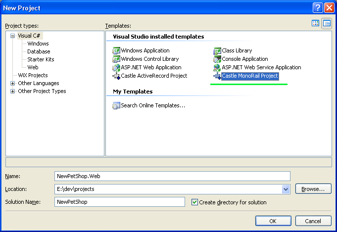
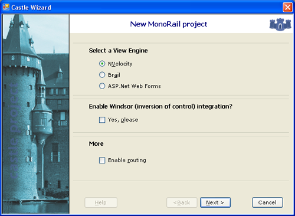
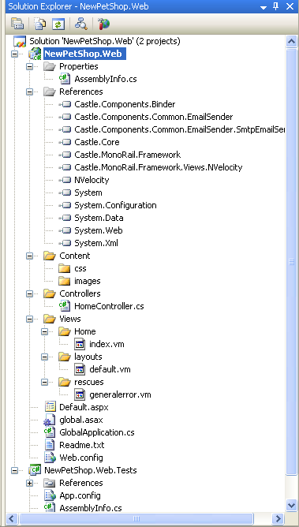
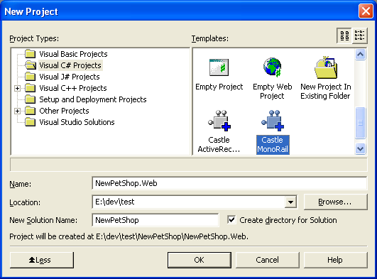
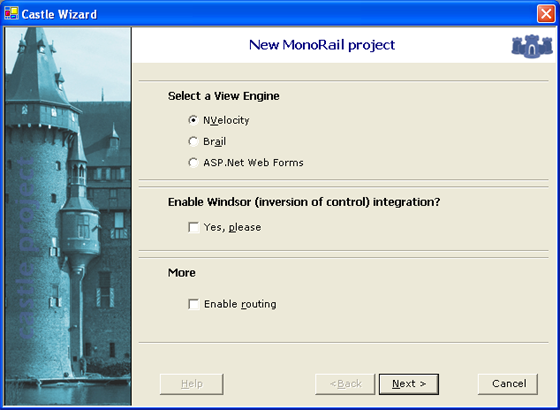
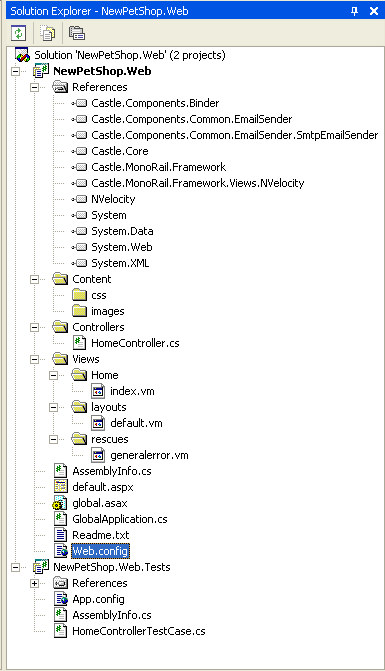

Visual Studio Integration
If you installed Castle on your computer using the MSI Installer, you will see two more options when creating a C# project using Visual Studio 2003 or 2005. These project wizards creates a project skeleton ready to be used. It saves you from adding assemblies references and creating the initial project structure.
New MonoRail Project
This project wizards creates a skeleton based on the configuration you supplied.
MonoRail Project on Visual Studio 2005
Visual Studio 2005 does not come with Web Project support out of the box. You have two options: installing the Web Project support or installing the Visual Studio 2005 Service Pack 1.
The Wizards that create Web Project will not work without the Web Project support installed.
Service Pack 1 can be found at http://msdn2.microsoft.com/en-us/vstudio/bb265237.aspx
Web Project support can be found at http://msdn2.microsoft.com/en-us/asp.net/aa336618.aspx
After installing Castle Project using the MSI installer, the Castle MonoRail Project will be shown on the new project window for C# projects:

Once you click, the wizard will be shown. The options selected will govern the project structure creation.
Do not enable Windsor Container if you are starting with the Castle Project. It might make things too complex for newcomers.

For a simple project with NVelocity View Engine, the following structure will be generated.

MonoRail Project on Visual Studio 2003
After installing Castle Project using the MSI installer, the Castle MonoRail will be shown on the new project window for C# projects:

Once you click, the wizard will be shown. The options selected will govern the project structure creation.
Do not enable Windsor Container if you are starting with the Castle Project. It might make things too complex for newcomers.

For a simple project with NVelocity View Engine, the following structure will be generated.

New ActiveRecord Project
This project creates a Class Library project with all references and a sample class using ActiveRecord. It also includes a project set up for test cases.
Found an error? Something inaccurate? Help us improve the documentation
Generated by Castle Anakia.
Sponsored by  Castle Stronghold.
Castle Stronghold.